REVIEWS
Patanjali’s Yoga Sutras
by S. V. Ganapati. Published by the author. 9-D Elliots
Road, Madras-4. Pages 124. Price Rs. 3-50.
The
Yoga is the most popular system of Indian Philosophy whose tenets are accepted
by all the schools. The system came into existence to outline the sadhana prescribed
for realising the Sankhya-Kaivalya. Later the sadhana became a
part of Indian culture and served as the pattern of Psycho-Somatic training.
It aimed at the release of the Purusha from his so-called illusory entanglement
from Prakriti.
In
the training at certain stages the practician was able to achieve certain
super-normal powers which should not lure him. Sri Ganapati has taken to the
study of the Yoga Sutras in a spirit of research. He justifies the writing of
his book on the system in the light of his new findings. He feels that the
traditional interpretations of the super-normal powers (animadi siddhis) attained
by the Yogi is not correct and it goes against the laws of Nature. So, he seeks
to give a clever interpretation of these Sutras compatible with the laws of
Nature. He rearranges the Sutras and their order. Another important point he
makes out is that the author of Yoga Sutras is not a dualist but is a
monist like the Advaitin. It is difficult to swallow this conclusion in the
face of the many commentaries in Sanskrit on the Yoga Sutras. In short Sri
Ganapathi’s book is stimulating and refreshing in the presentation of the theme.
Valmiki Maha Ramayana or
Yoga Vasishta by S. V. Ganapati. Published by the author. 9-D Elliots
Road, Madras-4. Price Rs. 4-50.
The
book under review is the summary of the philosophy of the classic Yoga-
Vasishta sixth section dealing about Nirvana. The author has
already given the Tamil world a condensed version of the five sections in a
book in 1948. The present volume is the extension of his studies. Yoga-Vasishta
occupies an unique place in the history of Advaita. It is a very elaborate
work and teaches clearly all the fundamentals of Advaita in an uncompromising
spirit. Sri Ganapati has made an excellent study of the
subject and has presented the theme in a readable way. In the
introduction he summarises the previous sections which is highly helpful to the
reader in his understanding of the book. The concept of Nirvana and its
meaning becomes clear stage by stage. The dialogue between Rama and Vasishta is
stimulating and discloses the deep philosophical truths and the nature of the
mind. It is difficult to summarise the book which is full of thought. Sri
Ganapati is to be congratulated on his services in making available to the
English-knowing world the great ideas of Yoga-Vasishta. Next to Dr. B.
L. Atreya’s book, Ganapati’s work throws great light on this book. It is a
valuable contribution to the study of Advaita.
Essays on Sanhkya and
other systems of Indian Philosophy by Anima Sen Gupta.
Published by Moti Mahal, Kanpur. Pages 170. Price Rs. 3.
The
volume under review is an excellent collection of articles on different systems
of Indian Philosophy from a well-known author and an expert on Sankhya
Philosophy. Each essay in the volume has some refreshing points to its credit.
There are twenty essays here and they are on almost all topics in Indian
Philosophy. They are all critical and informative. The article on Sankara
and Ramanuja, on the Gita, on Nyaya-Vaiseshika concept of soul,
History of Indian Philosophy and its reorientation are all very good. In
short the handy volume is a study of the problems in Indian Philosophy. The
chapters of the book appeared as articles in different journals at different
times. They are now made here available in one place and under one cover. An
index to the book would have helped the reader. The book is a valuable
contribution to the studies in Indian Philosophy. The book is printed well and
its get-up is good. It deserves to be used by the students of Philosophy as a
text for stimulating their appetite for research. The author has cut new ground
in her discussion of the problems of Philosophy.
Chandogya Upanishad and
Sankhya point of view by Anima Sen Gupta. Published by
Manoranjan Sen, Kanpur. Price Rs. 3.
This
little book is an original essay in interpretation of the great Upanishad Chandogya
in the light of the Sankhya system. Dr. Anima Sen Gupta is a great scholar
and is an authority on the Sankhya system. After her doctorate thesis on
Sankhya she has pursued her studies to see the influence of Sankhya on other
books. In this volume she has interpreted the sixth chapter of the Chandogya
from the Sankhya standpoint. The sixth chapter is the most important in the
Upanishad. It is Sadvidya and it contains the mahavakya tat tvam asi.
Advaitins claim that chapter as the locus-classicus of their
philosophy. Our author sees dualistic elements in the Upanishad. The entire
text of the sixth chapter is printed as appendix to the book. It is interesting
to read our author’s interpretation though it may be difficult to agree with
it. In short it is a fine essay in Philosophy.
–P. NAGARAJA RAO
The Victorian Age in
Literature by G. K. Chesterton. Published by the Oxford University
Press. Price Sh. 7/6.
For
roughly half a century the Victorian Age was debunked as one of smugness and
complacency. Such a statement will itself be guilty of critical smugness and
complacency today. The Victorian Age is now regarded as exceeding even the
Elizabethan period in riches and variety: the Widow of Windsor beats hollow the
Virgin Queen. The English Renaissance, it is said, became renascent in the 19th
century. The ironic treatment of the Victorians found in Lytton Strachey or
Chesterton, as Klingopulos remarks, appears more than ever inadequate. The
Victorians are our contemporaries; Curtis Dahl argues that Eliot’s Waste
Land which to us is so original is derived from the Wasteland of the
Victorian poets.
Chesterton’s
book is a free and personal statement of views and impressions of the
significance of Victorian literature. It is so provocative and brilliant that
it is more than a comment on the literature of a period; it is part of
literature itself. One can read the book for the Chestertonian style,
provocativeness and splash (let alone the humane criticism of the Victorians).
Chesterton is the mischievous boy of the Edwardian age pulling the Coat tails
of the sophists on the pedastal or in the market place. Shakespeare, it is
said, becomes everything he writes about and everything that Milton writes
about becomes Milton. Every statement becomes Chestertonian–breezy and
bellicose. The surprising thing is it is the bellicosity of an anti-iconoclast;
it is the breeziness of intuitionist. The book consists of a chapter on
Victorian compromise and another on the break-up of that compromise (the
profoundest parts of the book); in between are sandwiched two chapters on the
poets and the novelists. It starts with an arresting statement about the French
Revolution that the most important event in English history happened in France
and (a more precise and perverse statement) that the most
important event in English history was one that never happened at all. The
story is carried on to the Imperialism of Kipling and the Socialism of Shaw.
Statements
are unforgettably phrased. For instance, take these on Jane Austen, Wuthering
Heights and Dickens. Jane Austen may have been protected from truth: but it
was precious little of truth that was protected from her (p. 47)...Wuthering
Heights might have been written by an eagle (p. 49)...The art of Dickens
was the most exquisite of arts: it was the art of enjoying everybody
(p.51)...or the piquant remark on the Victorians in general: They were lame
giants; the strongest of them walked on one leg a little shorter than the other
(p. 69).
The
OPUS is doing a great service to students of English literature in
Indian universities by issuing these cheap paperbacks of such HUL classics like
the one reviewed. Chesterton does not need a reviewer’s puffery; any one with a
sense of style and an ear for the unexpected idea will delight in this. On p.
77 there is surprisingly a mistake: if for it.
The English Language by
L. P. Smith. Published by the Oxford University Press. Price Sh. 7/6.
A
distinguished critic commenting upon L. P. Smith’s Four Romantic Words asserts
that it is the model of treating higher Linguistics. There is no glamour about
grammar though it is derived from it. But some like Henry Bradley, Classen,
Jespersen, Baugh, Wrenn and Simeon Potter make even language as readable as a
novel. Lucidity, says a character in Shaw, is a divine gift and to make topics
lucid and interesting is a divine gift; some scholars have a gift of making
even easy topics obscure and dull.
L.
P. Smith is more interested in Semantics, in sense than in sound, as he states
on p. 65: “The last, however, is the most interesting and certainly the most
important aspect of the subject.” Language as the mirror of life and thought of
a country is the profoundest part of the study of language though Pundits pin
their faith to phonemes and junctures. The proper study of mankind is the Word;
to study words is to study the mind of man. The limits of our speech, in the
oft-quoted remark of Wittgenstein, are the limits of our thought. In the study
of words there is danger of importing our notions into words of earlier epochs.
For instance, ‘Prime Minister’ was a term of abuse and ‘proud’ meant’ valuable.
‘Chancellor’
is traceable to a crab, ‘progress’ did not have its modern connotation,
‘improving’ meant cultivating wasteland. Scapegoat and derring-do are two happy
errors enriching English vocabulary.
The
author starts with an account of the grammatical machinery, surveys
delightfully the loans, the power of word-making, the makers of language and
states roundly that there is nothing like purity in language, that assimilation
is purity. This is a knock-out blow to the fanatical and impure champions of
‘purism’ in language. Next Smith deals with history in English words (as
another great scholar Owen Barfield does in his book with that title) from the
dim and misty European past to the modern period high-lighting the specific
contributions of the Restoration or the Romantic Period. One of his happiest
observations is that the proliferation of compounds from a particular word hits
the mental climate of the period: for instance, self–pinpoints the
increasing importance of introspection. Of course, we have to guard ourselves
in the study of words against the danger of denying to the ancients a feeling
because there is no word for it. If in a particular period there is no word
like ‘bored’, it does not mean that people did not get bored. Homer is not
colourblind because he does not mention ‘green.’
With
scholarly expertise Smith takes us on a conducted tour of the highways and
byeways of English; with delicate and subtle acuteness he points out the
difference between -er and -or endings of agent-nouns. Books like these will
draw students from play and adults from T. V. and make language not a bogey but
a parlour game or a drawing room topic.
to
and this on p. 59 and 124 respectively seem to be
misprints.
–K. VISWANATHAM
Life
Behind Life by M. P. Pandit. Published by Sri Aurobindo
Manda1, Ahmedabad. Pages 142. Price Rs. 5.
Apparently,
the book is a collection of excerpts from letters of Sri M. P. Pandit of Sri
Aurobindo Ashram, Pondicherry, to some one or other of his fellow travellers on
a variety in subjects connected and related to Sri Aurobindo’s yoga and sadhana,
the topical gamut extending over a vast arena, ranging from ‘Supramental
Descent’ to ‘Animals and Matters physical’.
The
author gives lightning glimpses of Aurobindonian points of view on each of the
topics selected. But volumes may have to be written on each
one of the topics to bring out completely and thoroughly and do justice to Sri
Aurobindo’s ideas and expositions.
Such,
for instance, is ‘The New Age’. In this essay (written some two years ago or
so) the author focusses the attention of the reader on ‘concrete signs’ by
which one can know the manifestation of the New Force, The Supramental
Power. This is the higher force or rather the highest power which Sri
Aurobindo had not only reached but has successfully brought down to act on the
lowest levels of the physical. This has been his life work in his Life
Divine.
Thirty-two
years ago in August 1935 in a lighter vein, Sri Aurobindo said in one of his
letters to a sadhak in the Ashram “Now I have got the hang of the whole
hanged thing. Like a very Einstein I have got the mathematical formula of the
whole affair (un-intelligible as in his own case to any body but myself) and am
working it out figure by figure.’ Again some 12 years later in 1947 he referred
to the world situation than as “the period of darkest night before the dawn”,
and says, “I know what is preparing behind the darkness and can see and feel
the first sign of its coming.” Recently in June 1967 the Mother has stated that
“the Super-mind will enter the phase of realising power” meaning “Acting
decisively on the minds of men and the course of events”.
Sri
Pandit in the course of this letter on “The New Age” refers to “Masses of
illumination breaking upon cultivated and receptive minds” and cites the
instance of Cc the seekers in Florida, U. S. A. who find the earth now on the
eve of entering into a Fourth Dimension” and tells us in the words of
the Mother “The work is on, the question is only ‘Are you ready’?”
The
author is one of the few disciples of Sri Aurobindo and Mother, intimately
connected with the Ashram and the work for some three decades and more. He is
quite a fit person to throw light on such questions as have been raised and
answered in this book. But as
pointed out by the
author in his letter on “The Gods and our Sadhana”–“Sri Aurobindo does not
believe in bringing the truth to another’s door...publicity must be confined to
making known the ideal, the way to realise it, as also the practical results
achieved so far of effort in this direction.”
Some
of the other more important topics dealt with are “Gods and our Sadhana”,
“Potency of the Mantra”, “Life behind life”, “The Kundalini Yoga and the
Integral Yoga.”
The
book, small as it is, covering such a vast field serves as an introduction to
Aurobindonian thought and Yoga in general. Sri Pandit’s glimpses are fair
pointers leading the inquisitive and searching reader to the very source of
light.
The
publishers deserve to be congratulated on the fine get-up of the book and one
is really attracted by the beautiful cover-design of Suhrid Mukherjee.
–V. VENKATRAMA
SASTRY
Sri Vishnu Sahasranama
(with the commentaries of Sri Sankaracharya and Sri Parasara
Bhattar translated into English) by K. Parthasaradhy. Published by Ganesh &
Co., (Madras) Private Ltd., Madras-l 7. Pages 363. Price Rg. 12-00.
Sri
Vishnu Sahasranaama Stotra is famous for its infallible efficacy
both in the material and spiritual spheres. Even Sri Sankara enjoined the
recitation of the Bhagavad Gita and Sri Vishnu Sahasranama, cf. 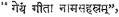 and he
commented upon them. Sri Parasara Bhattar a follower of Ramanuja also commented
upon this stotram. This book under review contains the translations of
the two commentaries, and is very conducive to make a comparative study of
these two. Those devotees who do not know Samskrit also can be benefitted by a
study of this book.
In
the introduction extending over 36 pages, the translator explains the value and
importance of the stotram as set forth by Sri Sankara and Sri Parasara
Bhattar in their commentaries. Then the five forms of Saguna Brahman, Para,
Vyuha, Vybhava, Antaryaamin and archa are described briefly. Efficacy of
the Naama also is dealt with in detail. In the prologue extending over
16 pages; where a reader expects a complete translation of the introductory
parts of the two commentaries, the translator makes a comparative study of the
views of the two Acharyas as expounded in their commentaries.
Coming
to the translation of the commentaries on the names, we do not have a literal
translation of Sri Sankara’s Bhashya. At some places the meaning given
by the translator differs from that given by Sri Sankara, e.g. Name - 178 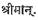 Sri
Sankara interprets it as 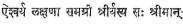–He who has complete “Sree’, wealth, in the form
of 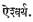 The
translator explains the word as follows: He possesses ornaments quite suited to
his Vigraha (Form). Name 202. 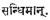 Sri
Sankara explains it as 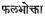 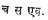 The
enjoyer of the fruits also is He alone. The translator explains it as “He
rejoices over the fruits conferred on the devotees by Him.” The name 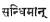 studied
with the previous name 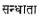 gives a
meaning appropriate to the Advaitic approach. Similarly the two names 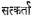 and 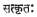 coming
one after another convey a meaning consistent with Sri Sankara’s Advaitic
conception. But the translator fails, we feel, to bring out the full
significance of Sri Sankara’s interpretation. On the name 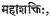 Sri
Sankara simply comments as 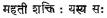 He who
has great prowess (power). The translator adds his own remarks to this as
follows: “Sakti here refers to Anugraha Sakti.” For the name 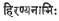 we have
here one meaning only as against the two in the original. Translating the Bhashya
on the name 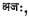 the
translator adds his own opinion that Sri Sankara had Nrisimha in his mind at
this place. Thus the translator does not follow the original faithfully. There
are additions and omissions and in some places he considerably differs from the
original. The translator leans more to Ramanuja’s point of view even in
explaining Sankara’s commentary. Printing mistakes, there are many.
Nevertheless this book is worth possessing by all devotees of Vishnu and
deserves a careful study.
Sri Lalita Trisati
Bhashya (English Translation) by Dr. Chaganti
Suryanarayanamurty. Sole Distributors: Ganesh & Co., (Madras) Private Ltd.,
Madras-17. Pages 22 + 148. Price Rs. 5.
Devotion
to God is the greatest of the means of salvation. Praising God by his
innumerable names is one of the many forms of devotion. Sri Lalita Trisati containing
300 names of the Goddess Lalita, is a unique Stotra in that it contains in
itself the 15 lettered Mantra of Sri Lalita and that it has the rare fortune of
being commented upon by Sri Sankara. Dr. C. Suryanarayana gives a faithful and
lucid English translation of Sri Sankara’s Bhashya and it is bound to be
of immense help to those that cannot read the original.
The
value of this edition is much enhanced by the addition of a learned
introduction and a free translation of Sreevidyadeepika by the author.
In the introduction, the author gives a critical estimate of the Bhashya.
With the help of relevant passages from the commentary, he proves that Sri
Lalita according to Sri Sankara is but the God Supreme, and that Bhakti and
Upasana have an important place in the doctrine of Advaita also. Sri
Sankara’s commentary on the name 244, the author says, is a neat and concise
exercise in physiological psychology indicating the relationship between the
self and body with reference to Yoga.
Agastya’s
Sreevidyadeepika explains the meaning of the 15 lettered Mantra
aknowledge of which is most essential to all the devotees. The meaning of the
complete Mantra according to the sage Agastya is “the power of consciousness
which through supreme extension of enlightened intellect through the activity
of the Vak or Sabda, prevents all undesirable things and confers
an abundance of wealth, happiness and great fame...” that I pray for. We
commend the author for the invaluable services rendered by him to the devotees
of Sri Lalita.
Kalidasa by
G. K. Rao. Published by Sreepada Sevasangham, Bangalore 4; Bombay 1. Pages 71.
Price Rs. 2-50.
This
extremely fascinating book on Kalidasa with a foreword by Dr. B. R. Sarma,
Director, Kendriya Samskrita Vidyapeetha Tirupati, is divided into four
chapters. Kalidasa’s personality and his views on life and love are brought out
in the last chapter. The author concludes “Kalidasa emphasises repeatedly that
joy and glory of life are in love, service and renunciation, and in trying to
realise God through these and through devotion.” The second and third chapters
contain a brief survey of the two Kavyas Kumarasambhava and Meghaduta.
Herein a reader can have a peep into the poetic beauties of the verses from
“Rativilaapa”. The laments of Rati and the dialogue of Siva and Parvati.
The fourth chapter aptly entitled “A People’s Poet” is invaluable in the sense
that it is a treasure of all wise sayings from Kalidasa’s works. All the
citations from the Poet’s works in Samskrit are accompanied by translations
into English, so that even a non-Samskrit knowing reader can easily appreciate
the beauties of the original. We heartily commend this book to all students of
literature.
Sri Sankara Vijayam. Published
by Ganesh and Co., (Madras) Private Ltd., Madras-17. Pages 57. Price Re. 1-50.
This
handy book describes in detail the life and achievements of Sri Sankara, with
relevant authorities from ancient Samskrit texts and tradition.
The salient points to be noted from this book may be summed up as follows: Sri
Sankara was born in the year 509 B. C. in Kaladi, a village in Kerala. Sri
Govinda Bhagavatpada, Sankara’s guru, bade him establish the tradition of Brahmavidya
at Kanchi, Sri Sankara established Kalikapitha at Dwaraka, Vimatapitha at
Puri, Sri Saradapitha and Bhogalinga at Sringeri, Sri Kamakshi, Yogalingam and
Sarvajnapitha at Kanchi, a Srichakra at Srisailam, Dhanakarshana Yantram at
Tirupati, and Moksbalingam at Chidarobaram, This author, whose name is not
given to us, concludes that the occupants of the Sarvajnapitha at Kanchi
directly descended from Sri Adisankara and hence were in the position of being the
premier Gurus of all the Sankara Pithas, and that Kanchi was the place of Sri
Sankara’s last resort and exit also.
–B. KUTUMBA RAO
Sahitya Silpa Samiksha
by Prof. Pingali Lakshmikantam. Published by Maliko
Publishers, Tirupati. Pages 410. Price Rs. 15.
The
learned author of this book is a famous scholar and poet in Telugu, and a
retired Telugu Professor admired by his students, Emanating from the facile pen
of such a professor, this book contains in itself the quintessence of the
precious knowledge gained by the author from his wide learning and rich
experience, and is bound to be highly useful to all students of Telugu
literature. In short, what Hudson’s “Introduction to the Study or Literature”
is to the students of English literature, that and something more also is this
book to the students of Telugu literature.
This
book on literary criticism is divided into 35 chapters. The first nine chapters
deal with the distinguishing features of art, science and literature,
definition of poetry, poetry and truth, poetry and morals, etc, The author is
of the opinion that the Western critics unlike Indian critics did not attempt
at a logical and un-fallacious definition of poetry. The poetic truth which is
different from that of philosophy, science and history is named by the author
as Paaramaaradhika Satya, and the suggestion thereof he names as Dharmadhvani.
Rasa and allied subjects are discussed in six chapters. The theory of Rasa
is explained on a psychological basis and the views expressed by Abbinavagupta
on Rasa, according to the author, are almost in agreement with those of
Aristotle. “Purgation” and “Catharsis” of Western critics are equivalents, the
author says, to Bhavana in Samskrit. Seven out of the 14 instincts
described by the modern psychologists are similar in nature to the Sthayibhavas
of Alamkarikas. Nine chapters are devoted to the study of Drama. The main
characteristics of Tragedy according to Aristotle and Shakespeare are described
and the causes for the absence of Tragedies in Samskrit are also explained.
Similarities in Samskrit and Greek dramas are also brought out in a chapter.
Other chapters deal with other forms of literature as novel, biography, short
story and Bhavakavita, etc. The significant value of this work consists
in the comparative study the author makes, his final conclusion at the end of
every chapter, the profuse quotations from standard works on literary criticism
in Samskrit and English, and the apt illustrations he gives here and there from
Telugu and Samskrit works. Thus this book, a systematised mine of information
on principles of literary criticism, is a boon to all students of literature
and deserves to be owned, read and digested by them.
–B. KUTUMBA RAO